小清水町でエアコン2台同時新設｜2階寝室・子供部屋に三菱ズバ暖・床下から基礎貫通の隠蔽配線・補助金活用事例
戸建て2階の寝室と子供部屋に三菱ズバ暖（寒冷地仕様）を 2 台同時に新設した施工事例です。「ホール 1 台で各部屋を冷やす」設計の限界をリプレースし、各部屋に 1 台ずつ分散設置することで快適性を最大化。電源は分電盤から床下→基礎貫通→お風呂上→2 階配管立ち上げという大規模な隠蔽配線で 2 回路を増設しました。小清水町のエアコン設置費助成制度（町内業者最大5万円・町外業者最大4万円）の申請サポートも実施し、お客様は 4 万円の補助金を無事受領されています。
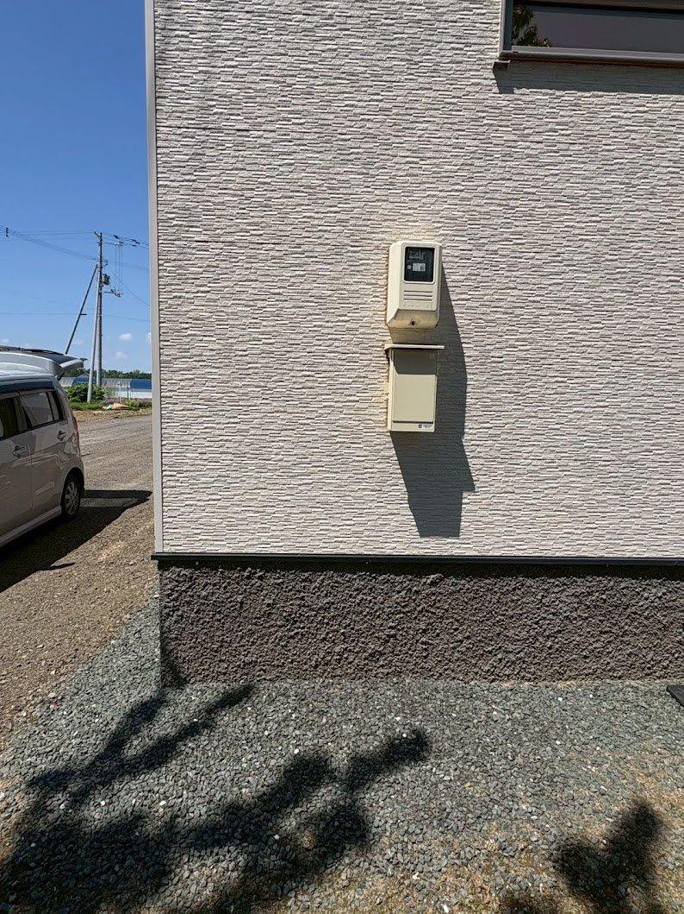
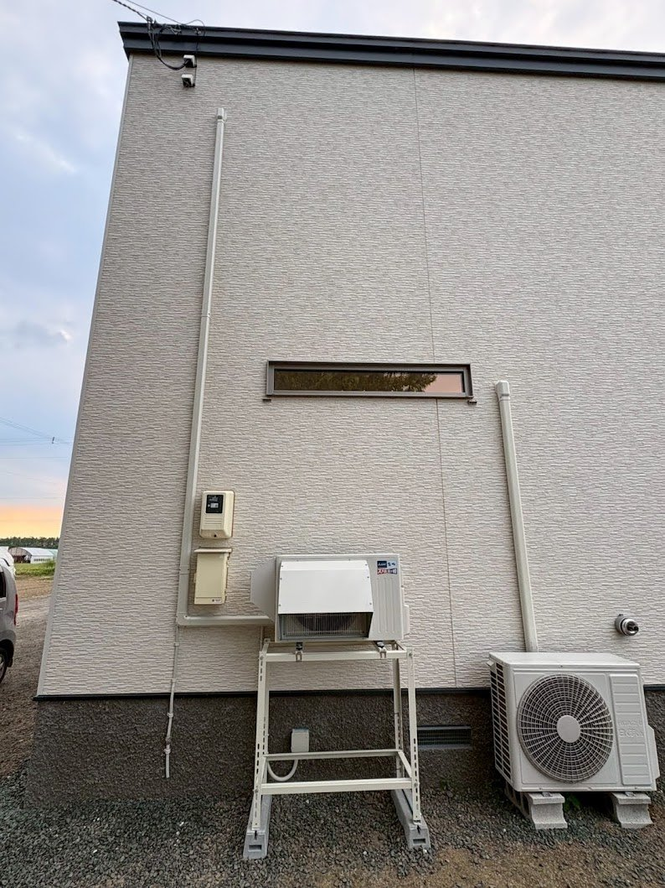
施工概要
| 施工日 | 2026年6月 |
|---|---|
| 地域 | 北海道斜里郡小清水町 |
| 建物 | 戸建て住宅（2階：寝室・子供部屋） |
| 工事内容 | エアコン 2 台 新規設置（2階寝室＋2階子供部屋）／分電盤から専用回路 2 系統 新設（床下〜基礎貫通〜お風呂上〜2階の隠蔽配線）／補助金申請サポート |
| 機種 | 三菱電機 ズバ暖霧ヶ峰（寒冷地仕様）× 2 台 |
| 追加工事 | 室外機 1 台目：1階屋根上設置（雪止め金具で強風・積雪対策）／室外機 2 台目：高置き二段架台（ズバ暖専用・冬の積雪埋没対策）／小清水町エアコン設置費助成制度の申請書類サポート |
お客様のご要望
「家を建てたときに 2 階のホールに『エアコンを 1 台付ければ各部屋も涼しくなる』という想定でエアコン専用コンセントだけはホールに付けてあったんです。でも実際にホールにエアコンを置いたとして、間取りを見ると寝室や子供部屋までは冷気が回らない気がしていて…。結局、寝室と子供部屋に 1 台ずつ別々で設置したいと考えています。せっかくなので、小清水町のエアコン補助金も活用したいです。申請の流れも分かる範囲でサポートしてもらえますか？」
施工のポイント
「ホール 1 台で各部屋を冷やす」設計を見直し、各部屋 1 台ずつの分散設置を提案
新築設計時には「2 階ホールにエアコンを 1 台設置すれば各居室にも涼気が届く」という前提でエアコン専用コンセントがホールに用意されていました。しかし実際の間取りを確認すると、扉や廊下のレイアウトから、ホール 1 台では寝室・子供部屋の温度が十分に下がりにくいことが分かりました。お客様のご希望も「各部屋に 1 台ずつ」に固まっていたため、寝室と子供部屋に 1 台ずつ計 2 台を新規設置するプランで進めました。
寒冷地仕様「三菱ズバ暖霧ヶ峰」を 2 台採用、冬の暖房需要にも対応
小清水町は冬季の最低気温が -25℃ を下回ることもある豪雪地帯（過去最低 -32.8℃の観測あり）。当初は寝室を「冷房専用の最も小型な 6 畳用」でというご相談もありましたが、寝室にも暖房が無く冬は寒いとのお話を伺い、結局は冷暖房兼用の寒冷地仕様「三菱ズバ暖霧ヶ峰」をご提案しました。-25℃級の外気でも暖房運転を維持できる設計なので、夏の冷房だけでなく真冬の暖房まで一台で賄えます。子供部屋側も同じくズバ暖で揃え、安心して四季を通じて使える 2 台構成にしました。
室外機の冬対策：1 台目は屋根上に雪止め固定、2 台目は高置き二段架台
寝室から窓を開けた外側はちょうど1 階の屋根面。室外機をこの屋根上に据え付けることで配管距離を最短化しました。ただし屋根面はそのまま置くだけでは強風や積雪移動で位置がずれる恐れがあるため、雪止め金具で確実に固定。子供部屋側は外壁面の地上付近で、冬の積雪に室外機が埋もれないよう、三菱ズバ暖専用の高置き二段架台を採用して屋外機の据付高さを上げました。それぞれの設置位置に最適な「冬を耐える」固定方法を選んでいます。
分電盤から床下→基礎貫通→お風呂上→2 階配管立ち上げの大規模隠蔽配線
2 台それぞれに専用回路を分電盤から個別に新設する必要があり、配線距離・配線ルートともに大規模なものになりました。寝室向けは長距離だったため、1 階の床下を通して基礎までたどり着き、基礎に穴を開けてその穴から 2 階方面に配線を逃がすルートを採用。そのままお風呂上の外壁側に穴を開けて配線を出し、2 階寝室まで配管で立ち上げる段取りで仕上げました。床下作業・基礎貫通・お風呂上の外壁貫通・配管立ち上げと、複数工程を組み合わせた隠蔽配線で、室内外ともに余分な配線露出を最小に抑えています。Panasonic 製分電盤の主幹 50A 負荷側に専用ブレーカー 2 系統（「1 寝室エアコン」「2 洋室エアコン」とラベル明記）を増設しました。
小清水町「エアコン設置費助成制度」の申請サポート（お客様は 4 万円受領）
小清水町にはエアコン設置費の一部を助成する制度があります（町内業者で施工した場合は最大 5 万円、町外業者は最大 4 万円・対象工事費税別の 1/2）。お客様が補助金活用をご希望でしたので、当店から町役場（建設課建設係）にも直接電話してヒアリングを行い、申請に必要な見積書・工事写真・領収書の様式・記載項目を確認。お客様が申請書類をスムーズに準備できるよう、当店側で制度要件に沿った見積書を発行しました。工事完了後はお客様が振込・申請を行い、4 万円の補助金を無事に受領。事前申請が必須の制度なので、工事着手前のスケジュール調整も丁寧にご案内しました。
施工の様子
ビフォー・アフター
外壁全景（配管・室外機なし → 配管立ち下げ＋室外機 2 台）
寝室壁面（エアコン未設置 → 室内機設置後 ※室内機 After 写真は近日公開）
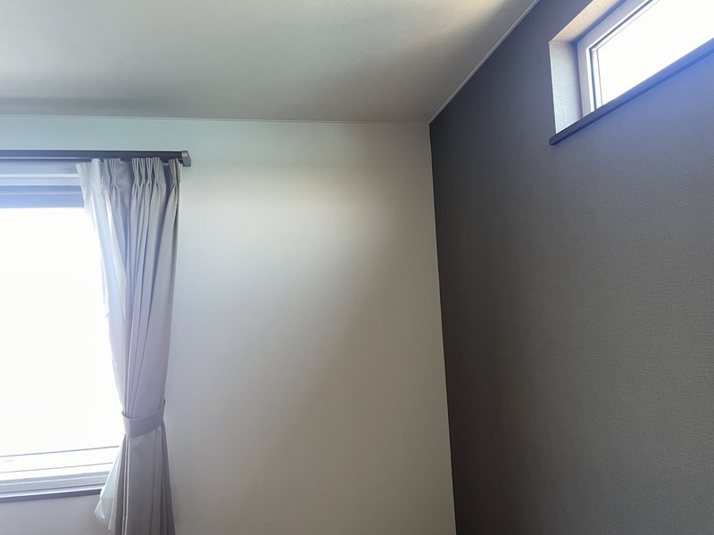
室内機 After 写真
近日公開予定
子供部屋壁面（エアコン未設置 → 室内機設置後 ※室内機 After 写真は近日公開）
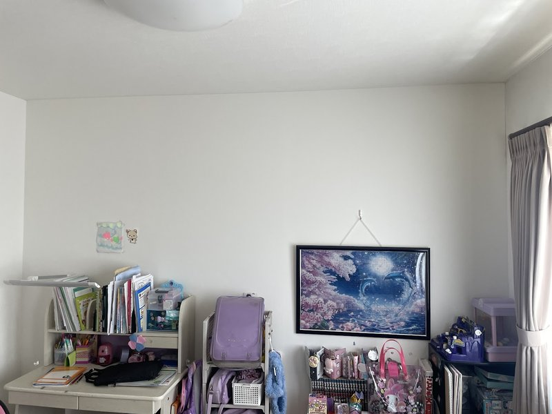
室内機 After 写真
近日公開予定
施工工程
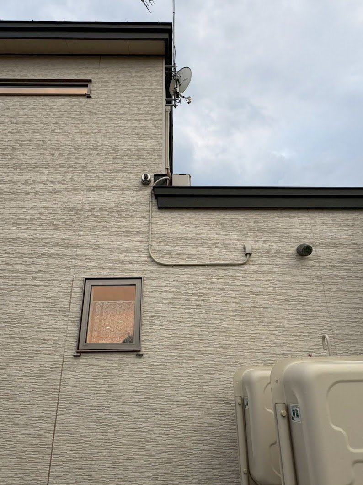
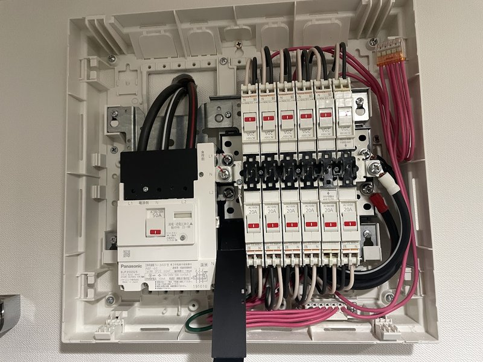
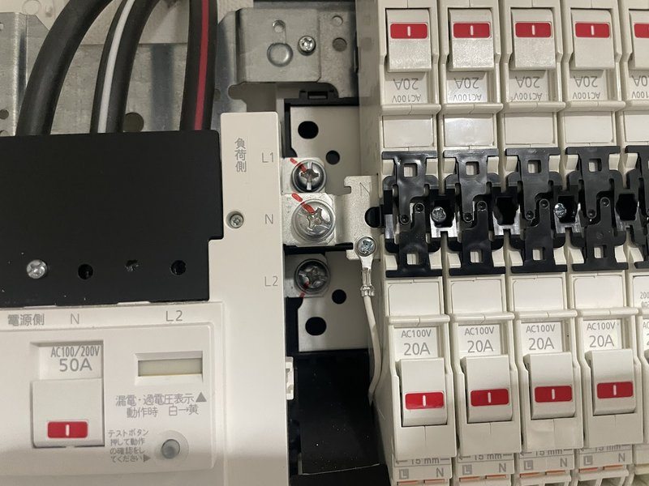
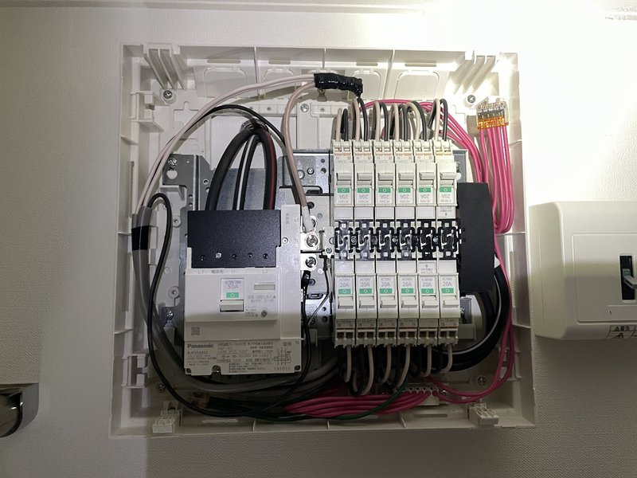
完成写真
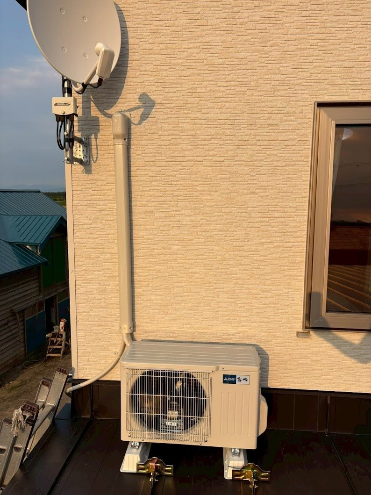
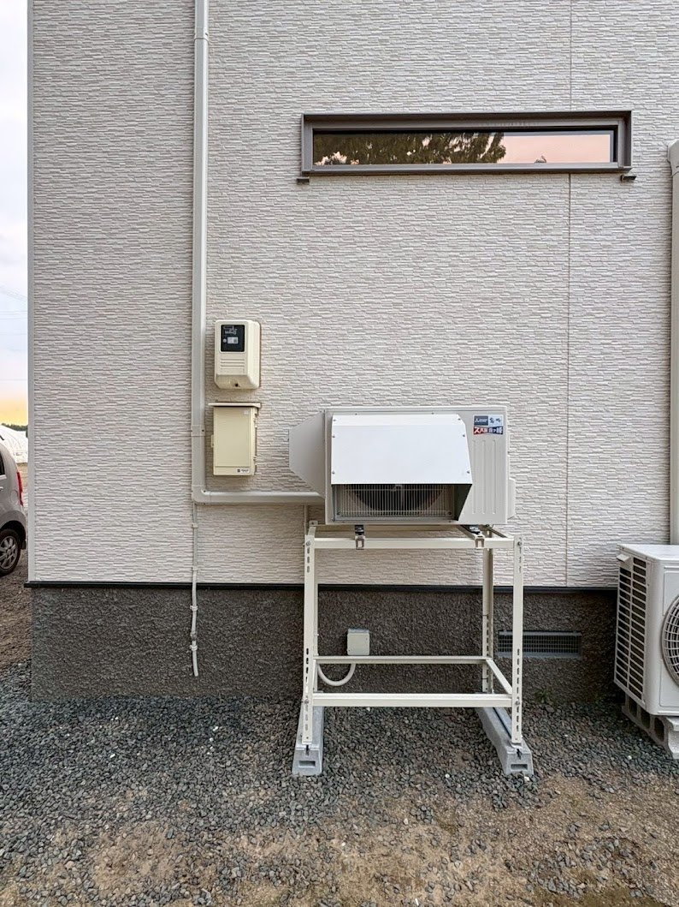
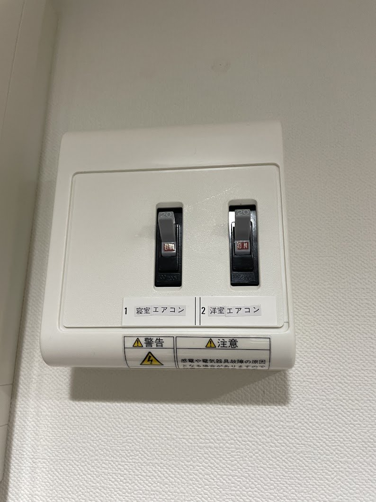
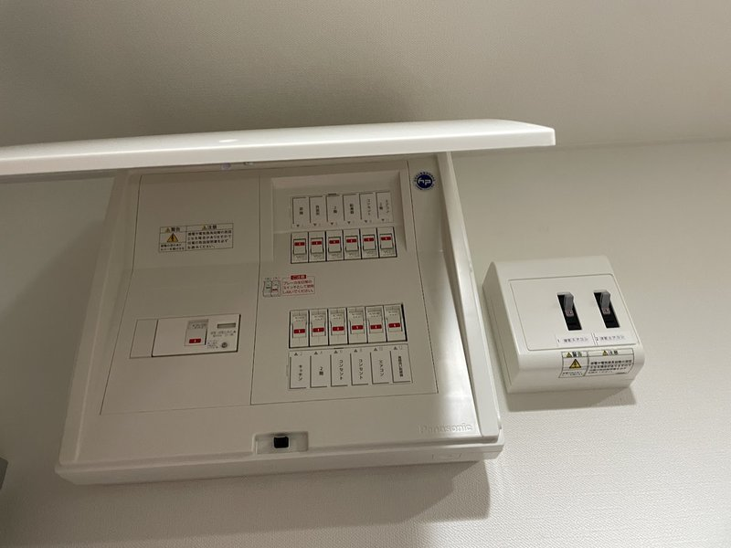
「補助金を活用してエアコンを設置したい」「2階に複数台の同時設置を相談したい」
そんなご相談もお気軽にどうぞ
担当者より
エアコンラボ北見店 担当スタッフ
小清水町のこのお客様邸では、新築設計時に「2 階ホールに 1 台付ければ各部屋まで涼しくなる」想定でエアコン専用コンセントがホールに用意されていました。ただ実際の間取りを見ると、ホールに 1 台では寝室・子供部屋までは思ったほど涼気が届かない可能性が高い。結局、寝室と子供部屋に 1 台ずつ別々で付けたいというお客様のお気持ちもあり、各部屋に分散設置するプランで進めることにしました。
今回もっとも工夫を要したのは電源工事です。寝室向け回路は配線距離が長く、通常のルートでは取り回しが厳しかったため、1 階の床下を通して基礎まで配線を持っていき、基礎に貫通穴を開けてそこから 2 階方面に逃がす大掛かりなルートを選びました。さらにお風呂上の外壁側に貫通穴を開けて配線を屋外に出し、そのまま 2 階寝室まで配管で立ち上げる段取りで仕上げています。床下作業・基礎貫通・外壁貫通・配管立ち上げと工程が連なるので、室内側にも極力露出を出さない隠蔽配線として丁寧に取り回しました。
室外機の据付も、小清水町の冬を考えて 2 種類使い分けました。寝室から窓を開けた先がちょうど1 階の屋根面だったので、室外機をその上に据えて配管距離を短く。ただし屋根面に置きっぱなしだと強風や積雪移動でずれる恐れがあるため、雪止め金具で確実に固定。子供部屋側は外壁地面付近で、冬の積雪で室外機が埋もれないよう三菱ズバ暖専用の高置き二段架台に据え付けました。機種は 2 台とも三菱ズバ暖霧ヶ峰。当初は寝室側を冷房専用の小型機でというご相談もありましたが、暖房が無く冬は寒いとのお話を伺い、冷暖房兼用の寒冷地仕様で揃えています。
そしてもう一つの大きなポイントが小清水町のエアコン設置費助成制度の申請サポートです。お客様自身で町ホームページを調べたうえで補助金申請を希望されていたので、当店からも町役場の建設課建設係に直接電話してヒアリングし、「どのような見積書様式が必要か」「写真や領収書の扱いはどうか」「申請期限はいつまでか」を一つひとつ確認。お客様が申請をスムーズに進められるよう、当店側で制度要件に沿った見積書を発行しました。事前申請が必須の制度なので、工事着手前のスケジュール調整にも気を配りました。工事完了後はお客様が振込・通帳記録の提出を経て、無事に4 万円の補助金を受領。「補助金まで含めて気持ちよく完了できた」と喜んでいただけた現場でした。
近郊エリアの他の施工事例

{kind=link}
{kind=link}
{kind=link}
{kind=link}
{kind=link}
{kind=link}
{kind=link}
{kind=link}
{kind=link}
{kind=link}
{kind=link}
{kind=link}
小清水町でエアコン取付・補助金活用をご検討中ですか？
お見積り無料。小清水町の補助金制度の申請サポートにも対応します。
北見市から小清水町まで車で約 1 時間。出張対応・現地調査もお気軽にどうぞ。
受付時間: 9:00〜19:00（年中無休）